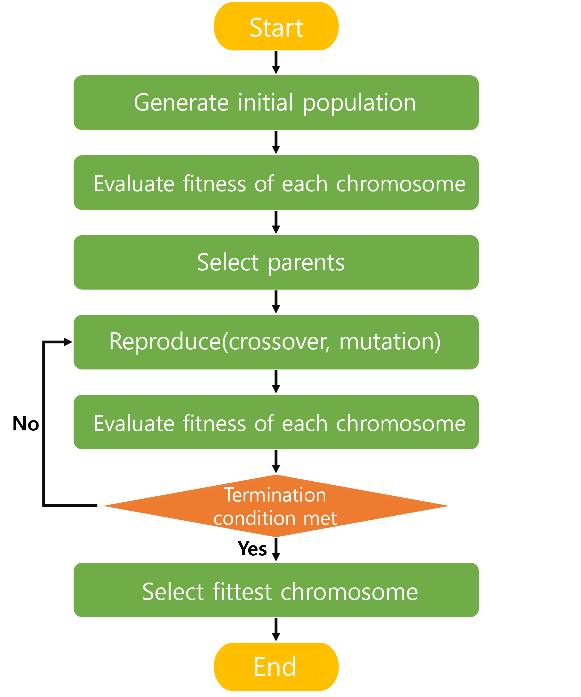
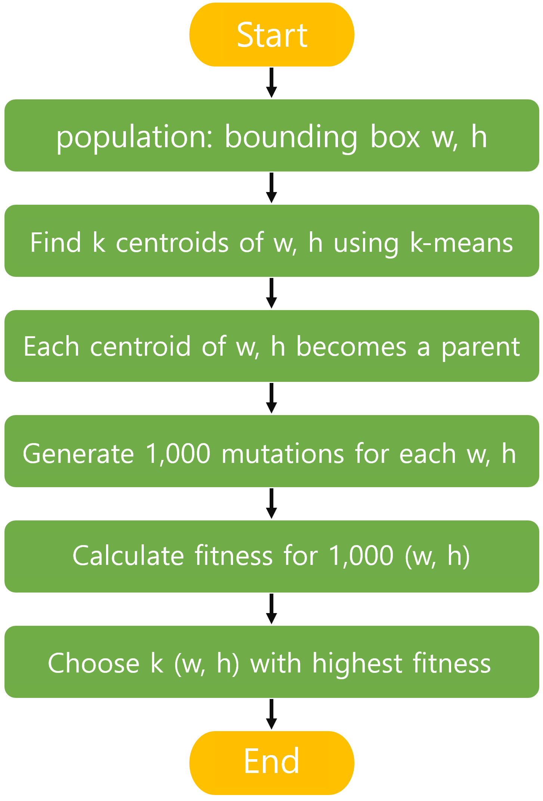

In this post, we will look into how anchors are selected in YOLOv5.
Table of Contents
Motivation
YOLOv5 is a model released by Glenn Jocher on Github. Before YOLOv5, he wrote and released the Pytorch version of YOLOv3 on Github. While watching issues posted by many users training custom datasets, he realized that the aspect ratio of bounding boxes in their datasets was often quite different from those in the COCO dataset. To address this, he added a genetic algorithm to the k-means clustering commonly used for selecting anchor boxes, and introduced autoanchor in YOLOv5 to automate this whole process. You can learn more about this in the interview at the link below.
https://www.youtube.com/watch?v=O4jOqVqyAo8
Genetic Algorithm
A Genetic Algorithm (GA) is a problem-solving method inspired by natural selection. Let’s look at the terms needed to understand GA:
- Population: A set of solutions to the problem.
- Chromosome: A single solution made up of genes.
- Crossover: Offspring are created using genes from parents.
- Mutation: Some genes change.
- Fitness: How suitable a chromosome/solution is for the problem.
GA proceeds in the following steps:

GA Used in YOLOv5
In YOLO, the GA process is modified as shown below.

- The population in YOLOv5 is the width and height of the bounding boxes. GA is used to find the most suitable width and height for anchor boxes.
- Parents are selected using k-means. After finding k centroids (width, height), each centroid becomes a parent.
- No crossover is performed for the k parents; instead, only mutation is done for as many generations as desired. By default, 1000 width-height pairs are mutated per parent.
- The fitness of the 1000 generated (w, h) pairs is calculated, and the one with the highest fitness is selected. In the end, k (w, h) pairs are chosen, and these become the anchor boxes used in YOLOv5.
Autoanchor
After the dataloader is created and before training starts, it is checked whether the current anchors are suitable for the current dataset using check_anchors. Inside this function, Autoanchor runs.
|
|
The following metric is used to determine whether the current anchors are suitable. Here, wh is an array of all bounding box [width, height] pairs, and k is the array of current anchor [width, height] pairs.
|
|
torch.min(r, 1 / r): Calculates the ratio of the bounding box width and height to each anchor box’s width and height. This results in a shape of (number of bboxes, number of anchors, 2).x = torch.min(r, 1 / r).min(2)[0]: For each bounding box, selects the smaller ratio with respect to each anchor, resulting in each bounding box having one ratio per anchor. The shape is (number of bboxes, number of anchors).best = x.max(1)[0]: For each bounding box, selects the anchor with the highest ratio.bestis an array containing the highest ratio for each bounding box. The shape is (number of bboxes).aat = (x > 1 / thr).float().sum(1).mean()bpr = (best > 1 / thr).float().mean()
If bpr is less than 0.98, new anchors are generated using the kmean_anchors function.
|
|
In the kmean_anchors function, k-means is first used to find k centroids from the bounding boxes.
|
|
After finding the centroids, mutation is performed using those centroids and fitness is calculated with anchor_fitness. The same metric as before is used, considering the width and height ratios.
|
|
Mutation is performed gen times (default is 1000). After generating 1000 mutated anchors, the one with the highest fitness is used as the final anchor.
|
|